Este é o meu portfólio pessoal, construído com a estética de um explorador de arquivos. Use a árvore
de pastas à esquerda (ou a busca no topo) para navegar entre Sobre Mim,
Projetos, Designs, Galeria de Fotos,
Experiência & Educação e Contato.
Fique à vontade para clicar nas pastas e abrir os arquivos! Cada um deles conta um pouco mais sobre
quem eu sou e o que eu faço.
Bio
Sobre Mim
Sou um desenvolvedor Full Stack e estudante de Tecnologia em Sistemas de Computação na
Universidade Federal Fluminense. Minha jornada na tecnologia teve início no ensino médio
técnico em Informática (IFRJ), o que me deu uma base sólida que hoje aplico em projetos de desenvolvimento
de software.
Tenho experiência em desenvolvimento web, atendimento ao público e
rotinas administrativas — já atuei como recepcionista realizando gestão operacional e
controle financeiro, além de monitoria acadêmica de lógica computacional. Sou comprometido, organizado e
busco desafios que me permitam aprender e gerar impacto.
Além do código, também atuo com UI/UX e Web Design, criação de identidade
visual (logos e flyers) e fotografia criativa — unindo tecnologia e design em
tudo que faço.
📍 São Pedro da Aldeia, RJ
Skills
Sobre Mim
💻 Front-end
HTMLCSSJavaScriptTypeScriptReactBootstrap
⚙️ Back-end
PythonJavaPHPMySQLPhpMyAdmin
📦 Bibliotecas & APIs
Chart.jsSwiper.jsDiscord.pyJSDelivr
🎨 Design
PhotoshopIllustratorLightroomFigmaCanva
🔧 Ferramentas & Hardware
GitGitHubMontagem de hardwareManutenção de computadores
🌎 Idiomas
Português (nativo)Inglês (avançado)
inDash
Dashboard e gerenciamento para freelancers
👉 Em desenvolvimentoprojeto em destaque
O inDash é uma plataforma de dashboard e gerenciamento pensada para freelancers
organizarem o próprio trabalho em um só lugar.
Equipe IFRJ · Fevereiro de 2024 – Fevereiro de 2025 · Híbrido, Arraial do Cabo/RJ
Desenvolvi com minha equipe um site de estudos onde o usuário pode escolher entre diferentes formatos de
conteúdo: vídeo, áudio ou texto.
Fui responsável pelo design no Figma e pelo front-end com HTML, CSS e JavaScript.
Implementei o back-end com PHP, MySQL e PhpMyAdmin para gerenciamento de usuários e
disciplinas.
Discord Bot Bordhok
Bot de comandos para Discord
PythonDiscord.py
Projeto pessoal · Abril de 2025 – Maio de 2025
Desenvolvi um bot para a plataforma Discord que responde a diversos comandos executados na caixa de
texto.
Utilizei Python e a biblioteca Discord.py para integração e automação
de funcionalidades.
Site de Artigo + Questionário
Projeto freelance
HTML/CSS/JSPHPChart.jsSwiper.js
Freelance · Maio de 2024 · Online
Desenvolvi um site de um artigo, acompanhado de um questionário que faz perguntas sobre o tema e armazena
as respostas.
Utilizei HTML, CSS, JavaScript e PHP para a estrutura e funcionalidade, com as bibliotecas
Chart.js e Swiper.js para criação de gráficos e sliders de imagem.
Mais Projetos
Repositórios no GitHub
open sourcegithub
Você pode acompanhar todos os meus projetos, experimentos e contribuições diretamente no meu perfil do
GitHub.
Novembro de 2025 – Junho de 2026 · São Pedro da Aldeia, RJ
Atendimento presencial e online de alunos, controle de caixa e conferência financeira diária, organização
de estoque, gestão de agenda para avaliações físicas e apoio às rotinas administrativas da unidade.
Desenvolvedor Web — Freelancer
Maio de 2024 · Online
Desenvolvimento de site de artigo com questionário interativo que armazena respostas, utilizando HTML,
CSS, JavaScript e PHP, com gráficos em Chart.js e sliders em Swiper.js.
Monitor de Lógica Computacional — IFRJ
Janeiro de 2023 – Agosto de 2023 · Arraial do Cabo, RJ
Auxiliei estudantes com dificuldades em estruturas lógicas por meio da linguagem Python, criando
materiais de estudo com exemplos de estruturas condicionais e de repetição nas IDEs VisualG e PyCharm.
Educação
Experiência & Educação
Tecnologia em Sistemas de Computação
Universidade Federal Fluminense (UFF) · Cursando desde fevereiro de 2025
Ensino médio técnico integrado em Informática
Instituto Federal do Rio de Janeiro (IFRJ) · 2021 – 2024
Inglês Avançado
SAYS Centro de Ensino · 2017 – 2023
📚 Estudos atuais
Formação Front-end — Alura (HTML, CSS, JavaScript, React e TypeScript)
Especialização em IA — Alura (fundamentos, aplicações práticas e ferramentas
modernas)
🏅 Certificações
Diálogos entre IA e Ciência da Aprendizagem — APPAI
Meus Designs
UI/UX, identidade visual & posts
Uma seleção de designs de páginas, posts e logos criados por mim — passe o mouse sobre as imagens para
explorá-las de cima a baixo.
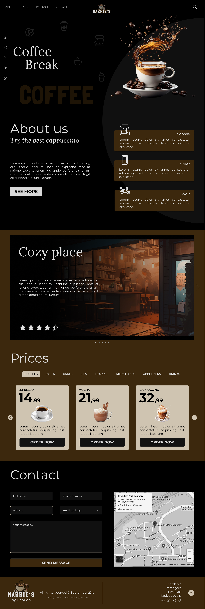
Marrie's Caffe
Novembro de 2024
Desenvolvi esse design casualmente durante meu período de formação no IFRJ, misturando duas coisas
que eu amo: café e design.
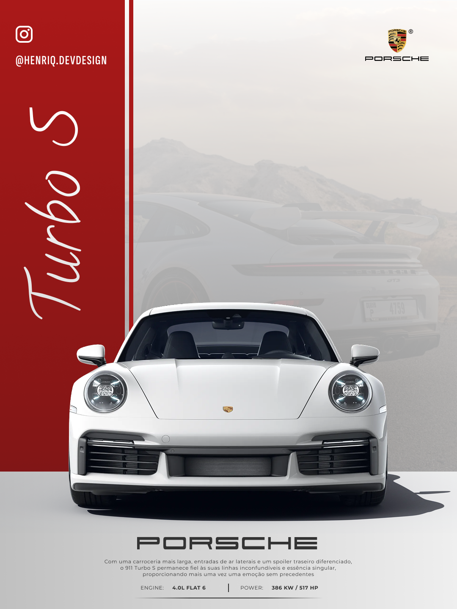
Porsche 911 Turbo S
Março de 2026
Para testar meus conhecimentos, escolhi um assunto que gosto — carros, especificamente a
Porsche — e desenvolvi um post para Instagram no formato 4:5.
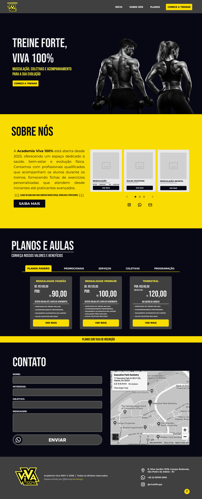
Viva 100%
Maio de 2026
O dono da empresa gostou dos meus projetos e pediu para que eu fizesse um pequeno design mostrando
como poderia ser um futuro site da academia.
Taty Modas
Junho de 2026
A dona do comércio ganhou esta logo desenhada por mim. Ela gostou muito do
resultado.
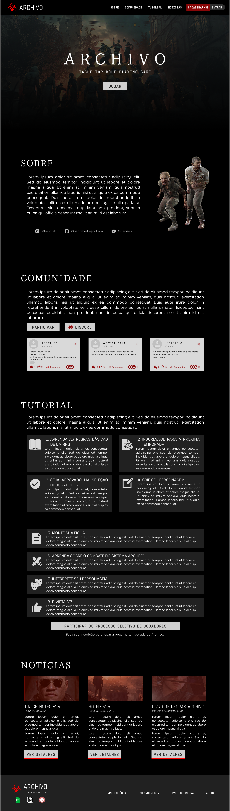
Archivo RPG
Janeiro de 2025
Site do meu RPG de mesa, também desenvolvido casualmente — um dos meus projetos
futuros é criar uma plataforma para RPG de mesa online.
Galeria de Fotos
Fotografia criativa & edições autorais
Um pouco do meu olhar através das lentes — fotos autorais com edição própria, clicadas na minha lendária
Sony Cybershot 12.1MP (veterana de guerra que se recusa a aposentar 📷) e no fiel
Motorola Moto G30 de bolso. Equipamento simples, olhar afiado. Passe o mouse sobre cada
foto para ver a legenda — e clique para ver em tela cheia.
Armação dos BúziosNa orla de São Pedro da Aldeia... "Ela une todas as coisas...""Seu olho é muito bonito, fica parada"
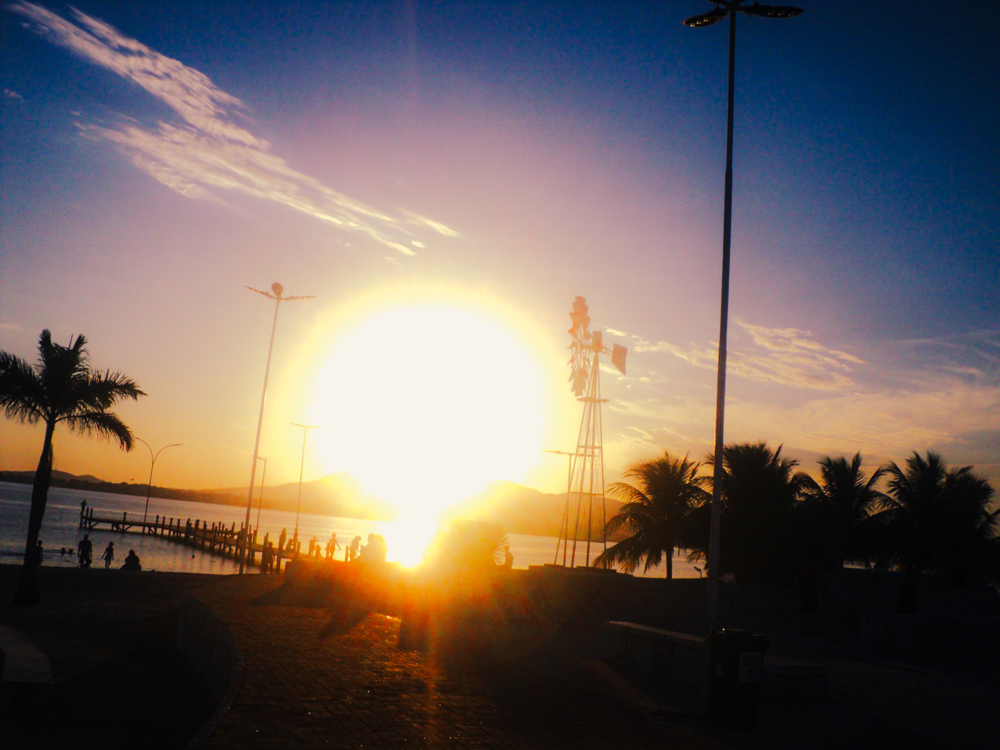
Essa foto me lembra Far Cry 5, por algum motivo
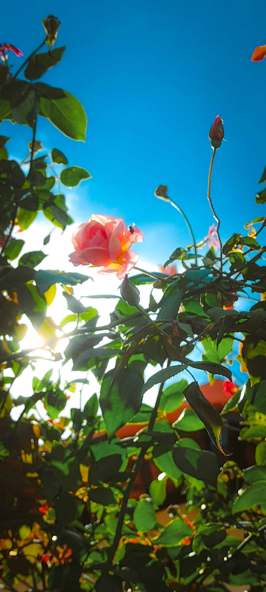
De repente, decidi que olharia para cima, enquanto caminhava por Saquarema -
RJ
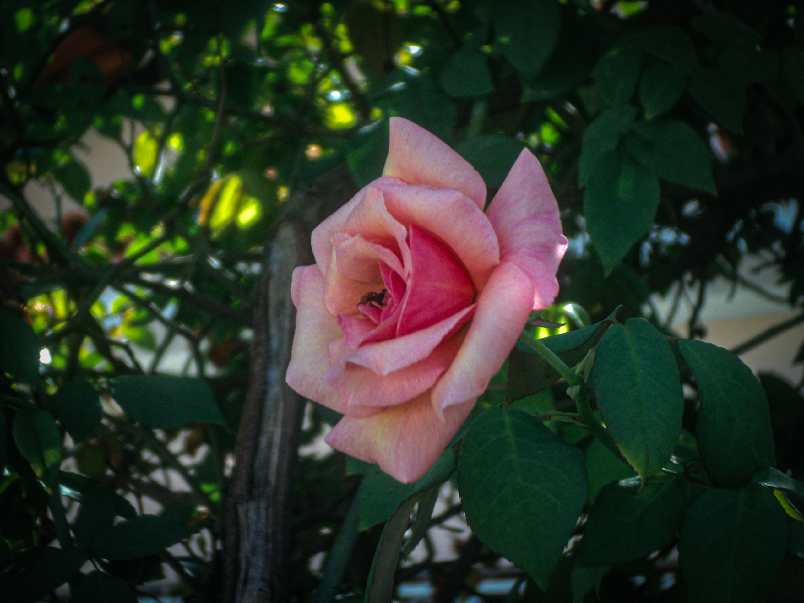
As flores da minha faculdade são muito bonitasNas ruas, encontrei sua textura
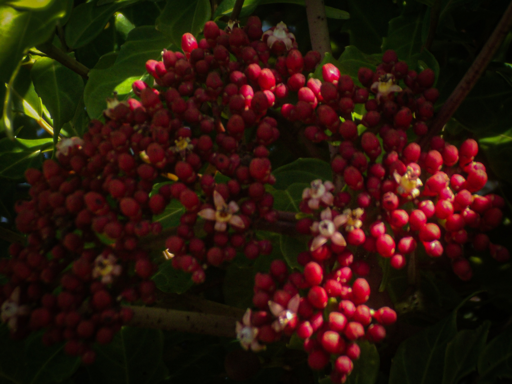
Abelhas rodeiam esses frutinhos
Laboratório de Multimídia - Faetec Saquarema
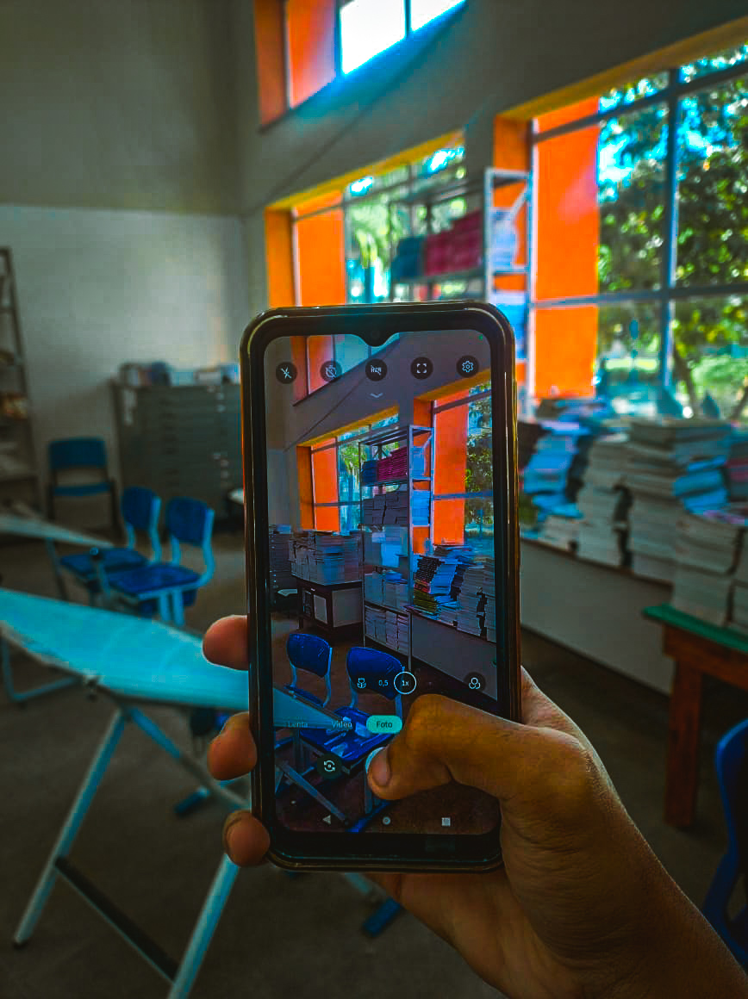
Como gosto de uma biblioteca... livros são minha paixão
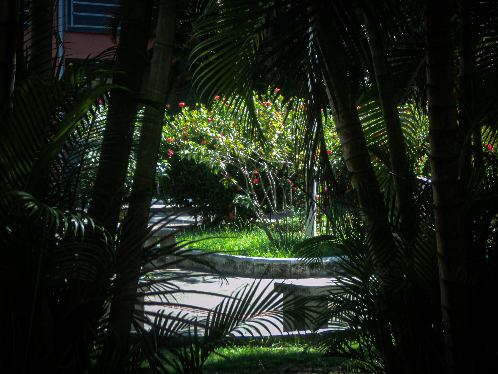
Observei esse frame e não pude deixar de registrarLivros, livros e mais livros!!!
Sentado no pier, observando o mar
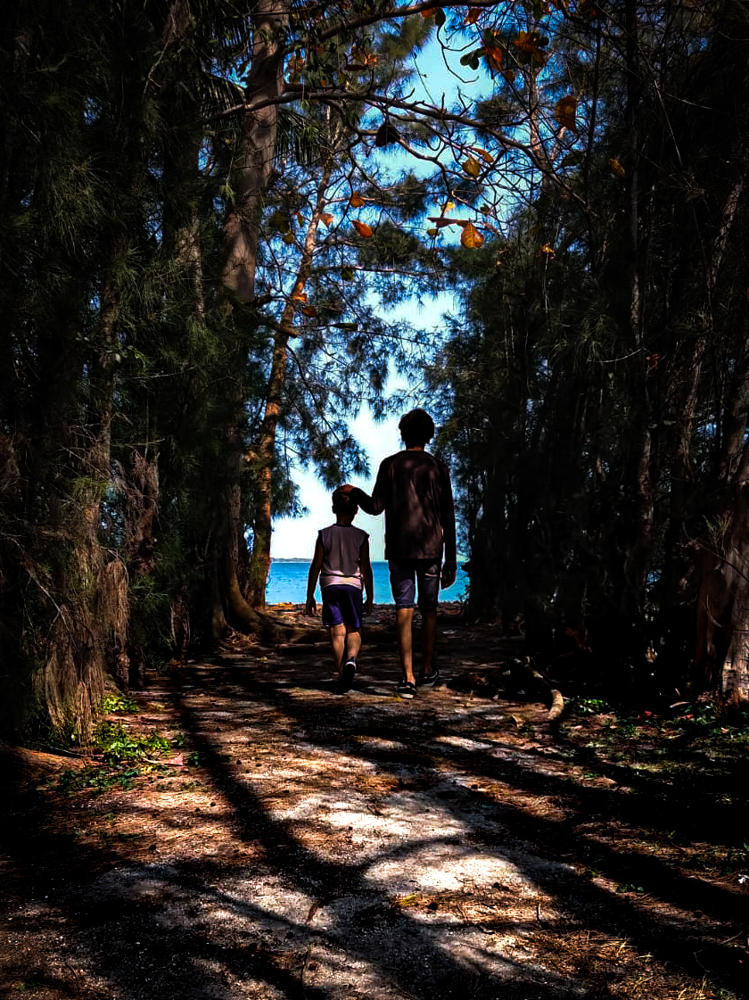
Fragmentos passados
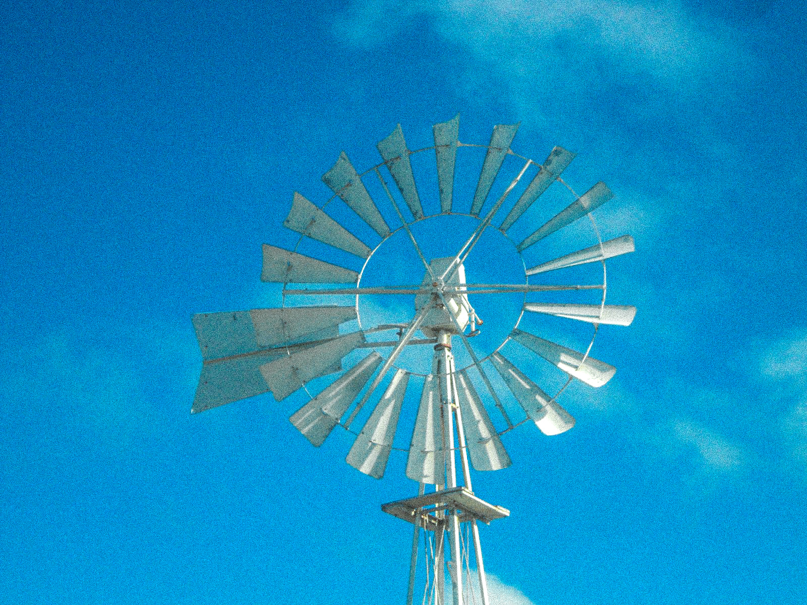
Não há ventos por aqui...
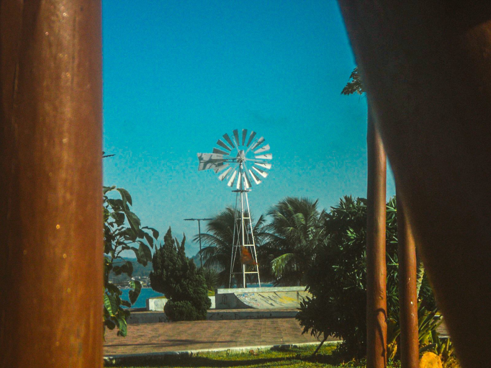
Um escorregador criou esse frame
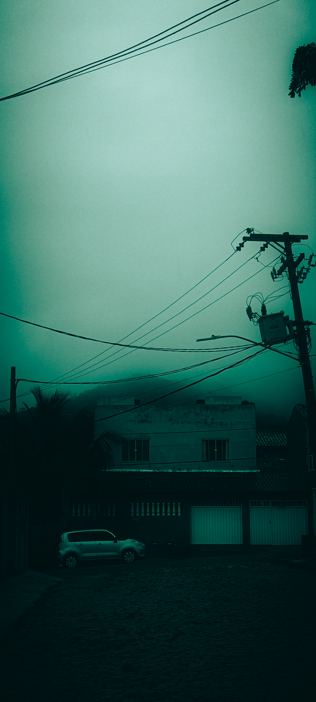
Não, eu não estive em Sillent Hill
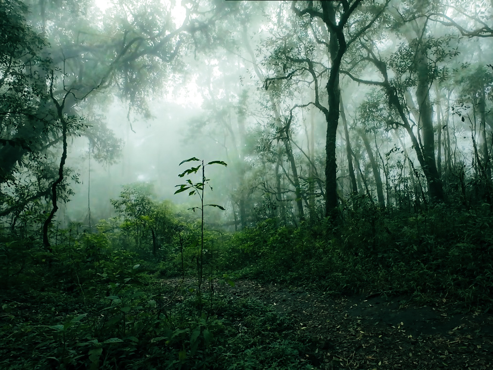
Esta trilha não fica em Sillent Hill, eu prometo
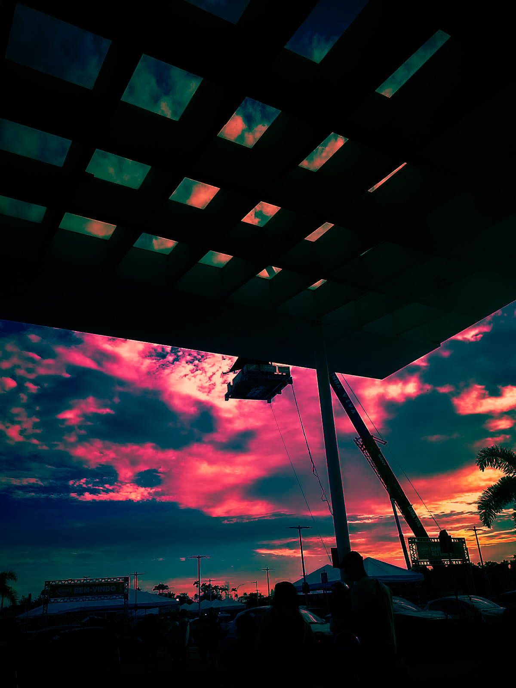
Estavam colocando uma tenda com um guindaste?60km/h é a velocidade máxima permitida por aqui
GitHub
github.com/henri-simoncini
45+ repositóriosopen source
Estatísticas do meu perfil, geradas em tempo real: